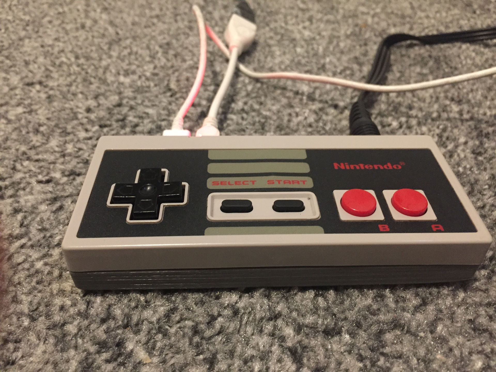

This project began more or less because I wanted to play EarthBound on a CRT TV. The TV itself only supports one connection type, a single scart port on the back of the unit. It became clear rather quickly that this kind of connectivity is a big limiting factor when it comes to approaching a problem like this. I had a few options that I soon exhausted:
Playstation 2’s Homebrew Scene- Despite there being a few SNES emulators available, the performance was abysmalHDMI to Composite adapter- Only supports a subset of the PAL standards, displays incorrectly (in black and white) on my CRT TV.
So lets build something new.
Build Requirements
- Full speed SNES games
- CRT TV Friendly
Settled on using a Raspberry Pi since they have RetroPie nicely packaged up, flocked to thingiverse for insperation and stumbled upon a NES controller project. This seemed liked perfect fodder to fuel this project, and a few more requirements were drawn out of this decision:
- NES controller can be used as a functional controller
- Toggle the power on the console with a combination of NES Controller buttons
- Cram an RCA composite connection into the small form factor
- Add an Indicator LED
Wiretapping the NES controller
We want to be able to use the controller functionally but also read a button combination from it to toggle the Rapsberry Pi Zero’s power state.
To understand if this is even possible we first need to understand two things a little better:
- Raspberry Pi Zero power options
- NES Controller functionality
Raspberry Pi Zero Power Options
Raspberry Pi makes use of a feature called device tree overlays. Among other things it allows for kernel modules to be enabled / disabled at boot time. Raspberry Pi devices come by default with a plethora of built in dtoverlays that can be used to modify behaviour at boot.
The documentation for the overlays can be found on your Raspberry Pi device under /boot/overlay/README, or over on the Raspberrypi firmware github page . One such overlay stands out as a very good candidate for achieving the power control we want:
README
Name: gpio-shutdown
Info: Initiates a shutdown when GPIO pin changes. The given GPIO pin
is configured as an input key that generates KEY_POWER events.
...
This overlay only handles shutdown. After shutdown, the system
can be powered up again by driving GPIO3 low. The default
configuration uses GPIO3 with a pullup, so if you connect a
button between GPIO3 and GND (pin 5 and 6 on the 40-pin header),
you get a shutdown and power-up button. Please note that
Raspberry Pi 1 Model B rev 1 uses GPIO1 instead of GPIO3.
Load: dtoverlay=gpio-shutdown,<param>=<val>
Params: gpio_pin GPIO pin to trigger on (default 3)
For Raspberry Pi 1 Model B rev 1 set this
explicitly to value 1, e.g.:
dtoverlay=gpio-shutdown,gpio_pin=1
active_low When this is 1 (active low), a falling
edge generates a key down event and a
rising edge generates a key up event.
When this is 0 (active high), this is
reversed. The default is 1 (active low).
gpio_pull Desired pull-up/down state (off, down, up)
Default is "up".
Note that the default pin (GPIO3) has an
external pullup. Same applies for GPIO1
on Raspberry Pi 1 Model B rev 1.
debounce Specify the debounce interval in milliseconds
(default 100)
The default configuration uses GPIO3 with a pullup, so if you connect a button between GPIO3 and GND, you get a shutdown and power-up button
This sounds like the exact behaviour we are looking for. So now that we know the Pi is willing to play ball lets take a deeper dive in to how the NES controller works.
NES Controller Functionality
NES Controller’s are surprisingly simple. They consist of a single 4021 8-bit shift register. This little IC reads 8 separate inputs and outputs them serially over a single pin. You can see from this diagram that each parallel input pin (P1-8) is wired to a button on the controller:
The other pins of note here are CK P/S, DS and O8.
| Name | Description |
|---|---|
CK |
Clock pin |
P/S |
Parallel or Serial select pin |
O8 |
Serial Output |
DS |
Serial input, tied LOW |
When the Console want’s to know which buttons are are being pressed, it will do the following:
- Set
P/SLOW, we are now in Parallel in, serial out mode. On each clock pulse, the 4021 will store the state of the 8 connected buttons in parallel - Send 1 clock pulse on the
CKpin. - Set
P/SHIGH, we are now in serial in, parallel out mode. On each clock pulse, the 4021 will read a new value in fromDSand shift all registers to the right - Loop 8 times:
- Read the value of
O8 - Send 1 clock pulse on the
CKpin. The next value becomes available onO8
- Read the value of
By stepping through this process, the Console can extract each button’s state from the NES controller using only 3 wires.
RetroPie actually had a driver that does this for us so we can wire the NES controller directly on to our GPIO to get full controller support.
Theory over, lets build something.
Using an ATTiny to bridge the gap
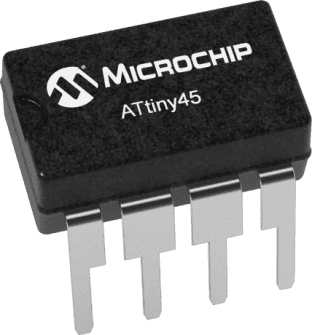We need a man in the middle to be able to drive GPIO 3 LOW when certain buttons are pressed on the NES Controller. This is because the Pi cannot do the work for us when it is powered off. For this project I decided to use an AATiny45 microcontroller for the job since I had a few lying around.
One problem we need to address is that two devices cannot interface with the 8 bit shift register of the NES controller at the same time without interfering with each other, Both CK and P/S need a single controller to be deterministic. However, each of the 8 NES buttons has its own dedicated connection pin on P1-8. So all we need to do is decide on a combination now and hard wire connections from those pins to our ATTiny as inputs.
We can prove this works by providing power to the 8-bit shift register and checking for a voltage shift on P8 when we press the A button:
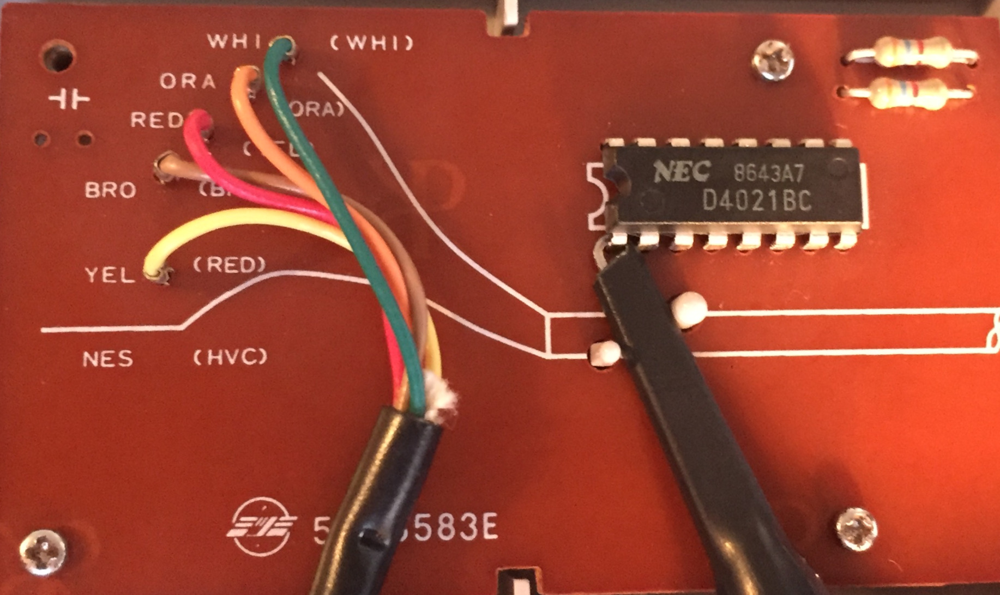
Pressing the
Abutton pulls the voltage LOW, returns to HIGH when released
Looking good. I opted to use buttons start + select as my combination.
Let’s get a breadboard set up and start trying to implement this. My NES controller has a CD4021BC IC, below is the pinout for this IC and the ATTiny45:
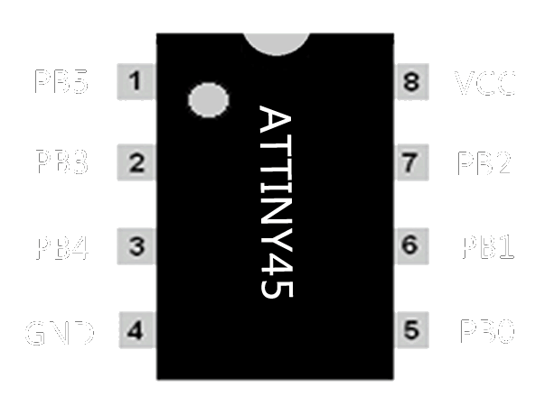
Comparing the Parallel In pins with the nes004 diagram
, we have enough information to wire this up now:
| 4021 | Attiny45 |
|
|---|---|---|
| 14 | PB1 | |
| 13 | PB2 | |
| 3v3 | 3v3 | |
| GND | GND | |
| 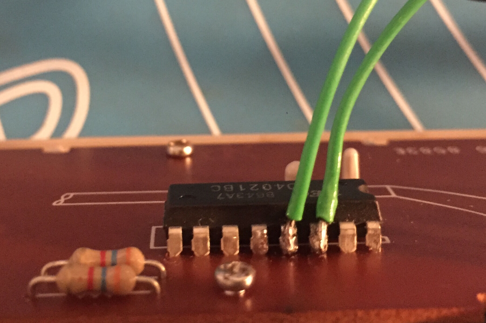 | 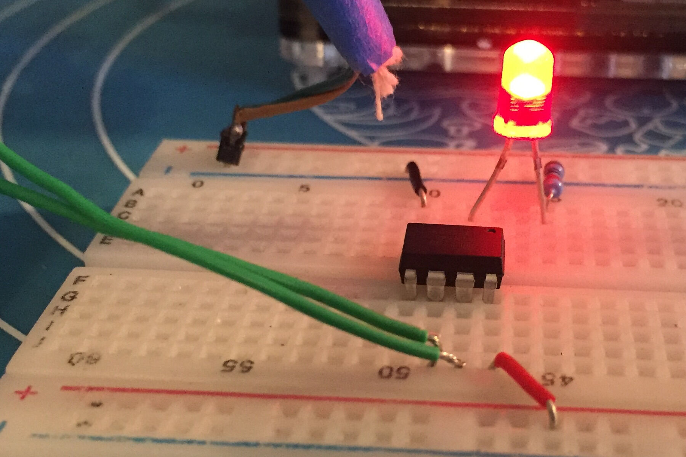 | |
Now that we have our hardware setup we need to start writing some software. All Raspberry Pi’s come with on-board SPI and we can leverage this to write directly to our ATTIny45 using AVRDude.
AVRDude Breadboard Setup
To make this a little easier you can build up a very simple breadboard circuit for seating your ATTiny when you want to flash to it.
Resistors aren’t required if you are using the 3v3 pin to power the ATTiny
|
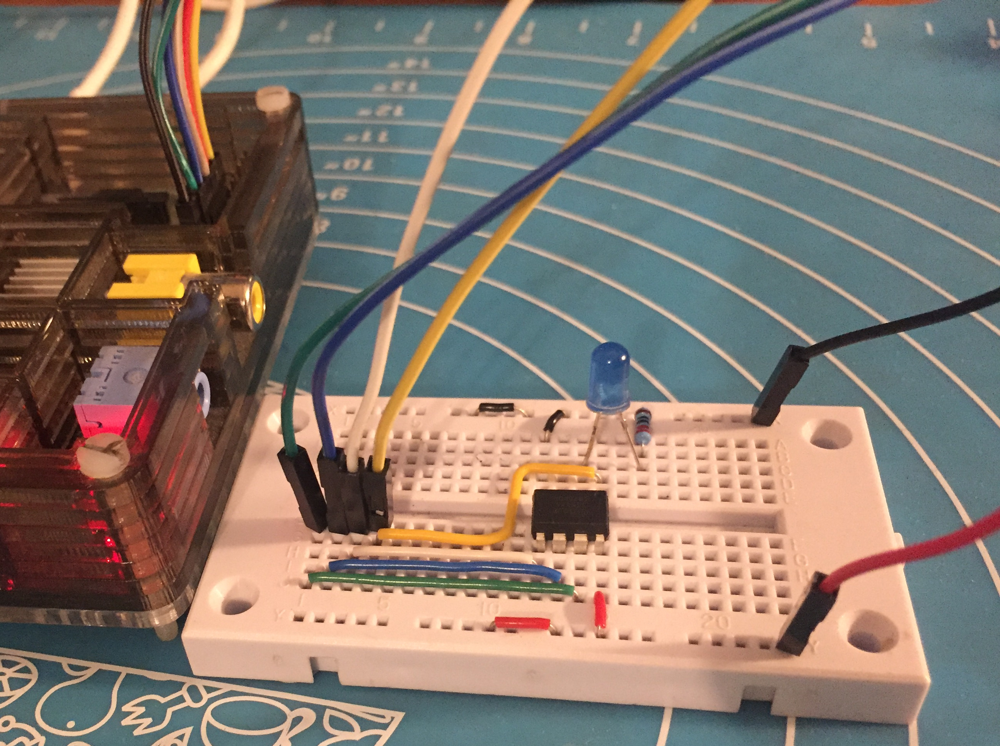 |
|
As seen in the picture, you can optionally connect PB5 to an additional GPIO on the Raspberry Pi, Pulling PB5 LOW puts the ATTiny into flash mode so realistically you can just tie this to GND.
AVRDude Setup
Login to your Raspberry Pi of choice and do the following steps.
Install dependencies:
sudo apt update && sudo apt upgrade -y
sudo apt install bison automake autoconf flex gcc-avr binutils-avr avr-libc -y
Clone a copy of AVRDude from github:
git clone https://github.com/kcuzner/avrdude
cd to the directory and compile AVRDude:
cd avrdude/avrdude
./bootstrap
./configure
sudo make install
Now lets test the connection, connect your ATTiny up to the SPI pins on your Raspberry Pi and run the following:
sudo avrdude -p t45 -c linuxspi -P /dev/spidev0.0 -b 10000
Output
pi@raspberrypi:~ $ sudo avrdude -p t45 -c linuxspi -P /dev/spidev0.0 -b 10000
avrdude: AVR device initialized and ready to accept instructions
Reading | ################################################## | 100% 0.01s
avrdude: Device signature = 0x1e9206
avrdude: safemode: Fuses OK (E:FF, H:DF, L:62)
avrdude done. Thank you.
pi@raspberrypi:~ $
If you get a similar output then your Pi can now communicate with the ATTiny!
You can see the fuse settings listed above. The fuse values are defaults and looking specifically at the LOW fuse settings, 0x62 means Use the internal 8Mhz RC clock source and divide by 8.
So out of the box the ATTiny is only clocked at 1Mhz. We can change this to use the 16Mhz PLL clock by modifying the LOW fuse to a value of 0xF1. There is a great online calculator
that is useful for understanding the fuses in more detail.
Please note that modifying fuse values is a potentially dangerous activity, please make sure you understand the fuse values you are modifying before running the command
Let’s change the LOW fuse to use a 16MHz clock
sudo avrdude -p t45 -c linuxspi -P /dev/spidev0.0 -b 10000 -U lfuse:w:0xf1:m
Output
pi@raspberrypi:~ $ sudo avrdude -p t45 -c linuxspi -P /dev/spidev0.0 -b 10000 -U lfuse:w:0xf1:m
avrdude: AVR device initialized and ready to accept instructions
Reading | ################################################## | 100% 0.01s
avrdude: Device signature = 0x1e9206
avrdude: reading input file "0xf1"
avrdude: writing lfuse (1 bytes):
Writing | ################################################## | 100% 0.02s
avrdude: 1 bytes of lfuse written
avrdude: verifying lfuse memory against 0xf1:
avrdude: load data lfuse data from input file 0xf1:
avrdude: input file 0xf1 contains 1 bytes
avrdude: reading on-chip lfuse data:
Reading | ################################################## | 100% 0.00s
avrdude: verifying ...
avrdude: 1 bytes of lfuse verified
avrdude: safemode: Fuses OK (E:FF, H:DF, L:F1)
avrdude done. Thank you.
pi@raspberrypi:~ $
Great, you can see the fuse value has now changed. We should be running at 16Mhz now when it comes to runtime.
The code that I eventually used in this project is available here .
It uses the Interrupt and Timer features of the ATTiny45 to essentially say:
while True:
OUT_PIN = 1
if IN_PIN_1 == 0 and IN_PIN_2 == 0:
sleep(1.2)
if IN_PIN_1 == 0 and IN_PIN_2 == 0:
OUT_PIN = 0
You can compile this code and push it to your ATTiny by running the following commands:
avr-gcc main.c -mmcu=attiny45 -Os -o main.bin
avr-objcopy -O ihex main.bin main.hex
sudo avrdude -p t45 -c linuxspi -P /dev/spidev0.0 -b 10000 -U flash:w:main.hex
Output
pi@raspberrypi:~/attiny$ avr-gcc main.c -mmcu=attiny45 -Os -S -o main.S
pi@raspberrypi:~/attiny$ avr-objcopy -O ihex main.bin main.hex
pi@raspberrypi:~/attiny$ sudo avrdude -p t45 -c linuxspi -P /dev/spidev0.0 -b 1
0000 -U flash:w:main.hex
avrdude: AVR device initialized and ready to accept instructions
Reading | ################################################## | 100% 0.01s
avrdude: Device signature = 0x1e9206
avrdude: NOTE: "flash" memory has been specified, an erase cycle will be performed
To disable this feature, specify the -D option.
avrdude: erasing chip
avrdude: reading input file "main.hex"
avrdude: input file main.hex auto detected as Intel Hex
avrdude: writing flash (230 bytes):
Writing | ################################################## | 100% 0.98s
avrdude: 230 bytes of flash written
avrdude: verifying flash memory against main.hex:
avrdude: load data flash data from input file main.hex:
avrdude: input file main.hex auto detected as Intel Hex
avrdude: input file main.hex contains 230 bytes
avrdude: reading on-chip flash data:
Reading | ################################################## | 100% 1.79s
avrdude: verifying ...
avrdude: 230 bytes of flash verified
avrdude: safemode: Fuses OK (E:FF, H:DF, L:F1)
avrdude done. Thank you.
pi@raspberrypi:~/attiny$
We can now test the chip in on our breadboard:

And finally solder the ATTiny onto some strip board, the module itself will be seated between two pillars in the case bottom:
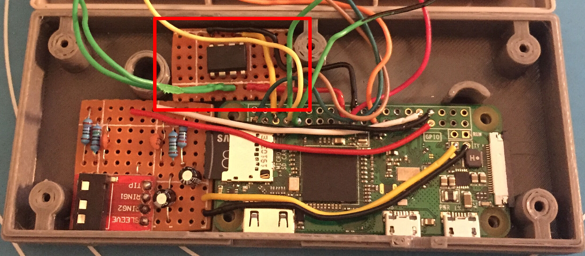
This equated to a stripboard piece with 11 x 6 holes for me. You can sand down the piece to fine tune the size so it fits in the cavity. The design for the board is very simple you just need to isolate the adjacent pins from each other by placing some holes in the center:
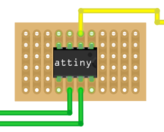 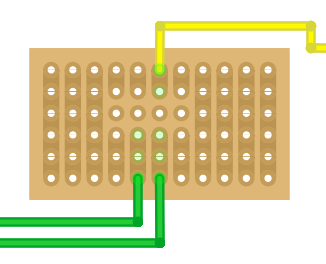
Onto the next circuit.